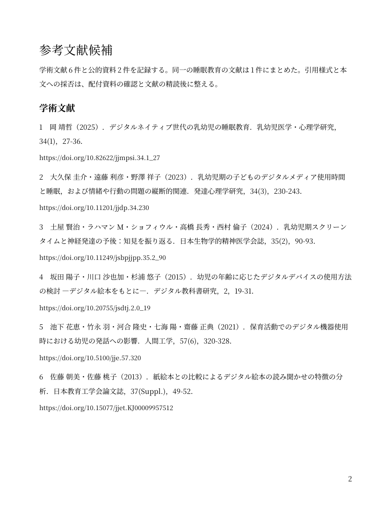

01研究計画と章立て

研究準備版
乳幼児期におけるデジタルメディアの利用と
子どもの発達との関連
計画を見返す。文献を読む。考えを整理する。
卒業論文を少しずつ進めるための閲覧ノートです。
テーマと研究方法を整理した段階です。
大学の執筆資料を確認してから、構成と書式を整えます。
ページ画像をそのまま表示します。拡大ボタンから、文字を大きくして読めます。
Wordの段落をそのまま表示しています。ページの配置は画像版で確認できます。


前環境で確認した書誌情報・抄録の記録を引き継いでいます。論文PDF本文の精読は、これからです。
関連が見られても、原因とは限りません。対象年齢・研究方法・限界を確かめながら読み進めます。
受領後に、構成・文献研究の方法・書式・引用方法を合わせます。
対象年齢、中心に扱う発達領域、提出期限、文字数を確認します。
対象・方法・結果・限界・引用するページを、共通の項目で記録します。
決めたこと、確認したこと、まだ分からないこと。
更新時点の記録を残しています。
文献データを読み込めませんでした。ページを再読み込みするか、文献一覧を保存してご確認ください。